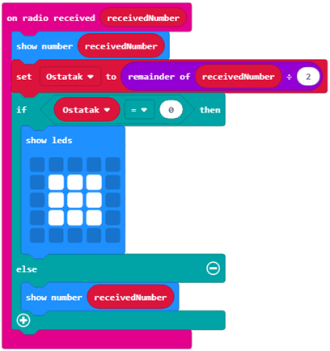

Puna me Blloqe nga Kategoria e Radios¶
Në këtë mësim, do të njihemi me blloqet nga kategoria  , d.m.th. blloqet të cilat përdoren për krijimin e një lidhjeje dhe komunikimi midis dy ose më shumë pajisjeve Micro:bit. Ashtu si në këtë rast ne nuk do të përdorim Micro:bit, në ekranin e simulatorit do të shfaqen dy Micro: bit.
Në simulator, të gjitha kodet e krijuara do të funksionojnë në të dy Micro:bit virtuale.
, d.m.th. blloqet të cilat përdoren për krijimin e një lidhjeje dhe komunikimi midis dy ose më shumë pajisjeve Micro:bit. Ashtu si në këtë rast ne nuk do të përdorim Micro:bit, në ekranin e simulatorit do të shfaqen dy Micro: bit.
Në simulator, të gjitha kodet e krijuara do të funksionojnë në të dy Micro:bit virtuale.
Krijoni një program i cili, kur shtypet butoni A, dërgon një numër të rastit nga intervali 0 në 100. Kur merret ky informacion, në mes të ekranit shfaqet një dritë, duke formuar një katror 3x3 nëse numri i marrë është i barabartë; përndryshe, shfaqet vlera e këtij numri.
Duke krijuar një grup ID, ne në fakt krijojmë një hapësirë ku pajisjet do të komunikojnë.
Për të krijuar një grup ID, duhet të tërheqim bllokun  nga kategoria në bllokun
nga kategoria në bllokun  . Në fushën e hyrjes për numra dhe tekst, ne mund të vendosim numrin e dëshiruar për grupin e identitetit, i cili mund të jetë çdo numër. Do ta lëmë që të jetë 1. Në këtë mënyrë krijuam grupin ID 1, ku të dyja Microt:bitet mund të komunikojnë.
. Në fushën e hyrjes për numra dhe tekst, ne mund të vendosim numrin e dëshiruar për grupin e identitetit, i cili mund të jetë çdo numër. Do ta lëmë që të jetë 1. Në këtë mënyrë krijuam grupin ID 1, ku të dyja Microt:bitet mund të komunikojnë.

SHENIM: Kur ne përdorim blloqet nga kategoria Radio do të ketë dy Micro:bit të shfaqura në simulues.
Variabli Counter ruan vlerën e marrë nga përdorimi i bllokut  , ose më saktë, variabli
, ose më saktë, variabli Counter merr një nga vlerat e rastit nga intervali 0 deri në 100.
Kur shtypet butoni A, biti Micro: dërgon vlerën e variablit Counter duke përdorur bllokun  nga kategoria .
nga kategoria .
Pamja e kodit:

Kur informacioni dërgohet (në rastin tonë Counter), këto informacione duhet të merren. Bazuar në këtë informacion, përcaktohet ekzekutimi i programit (sheshi do të shfaqet nëse numri i marrë është i barabartë; përndryshe, do të shfaqet vlera e numrit të marrë). Për këtë, ne do të tërheqim një bllok nga kategoria :
Në këtë bllok, ne do të tërheqim bllokun që përcakton variablin Remainder, e cila ruan vlerën për ndarjen e plotë të Counter me 2:

Kjo pasohet nga blloku  . Në pjesën
. Në pjesën  do të kontrollojmë nëse ka një pjesë të mbetur pas ndarjes së plotë të Counter me 2. Nëse kjo është e vërtetë, do të shfaqet një katror 3x3. Përndryshe, nëse kushti nuk është përmbushur, që do të thotë që pjesa tjetër nuk është 0, do të shfaqet vlera e variablit
do të kontrollojmë nëse ka një pjesë të mbetur pas ndarjes së plotë të Counter me 2. Nëse kjo është e vërtetë, do të shfaqet një katror 3x3. Përndryshe, nëse kushti nuk është përmbushur, që do të thotë që pjesa tjetër nuk është 0, do të shfaqet vlera e variablit Counter:
Linku final i kodit:
Kinku për kodin: https://makecode.microbit.org/_f31EfHcv6Kpy
Për të provuar programin, ne do ta ekzekutojmë në simulator duke klikuar në butonin  .
.
- Kur të dhënat janë marrë, asgjë nuk do të shfaqet.
- Përgjigja është e saktë!
- Kur të dhënat janë marrë, LED me koordinatat (2,2) do të ndizet.
- Përgjigja është e saktë!
- Kur të dhënat janë marrë, mesazhi "Përshëndetje" do të shfaqet.
- Përgjigja është e saktë!
Q-12: Studio blloqet me kujdes.

Çfarë do të shfaqet pas ekzekutimit të blloqeve më lart?
Detyrë Organizoni blloqet në mënyrë që ata të simulojnë funksionimin e një Telegrafi, më saktësisht kur sinjali (numri) dërgohet, LED-të ndizen në vende të zgjedhura rastësisht.
Ndihmë e vogël: Vlerat e koordinatave x dhe y janë nga intervali 0 deri në 4
Krahaso zgjidhjen tënde me një nga zgjidhjet tona: https://makecode.microbit.org/_JgFC5vRpudkq